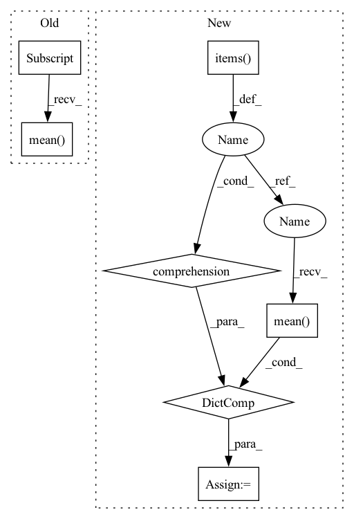

Pattern ID :20592

Before Change
if self.num_gpu > 1:
loss = loss.mean()
for metric in metrics:
metrics[metric] = metrics[metric].mean()
return loss, metrics
def _set_training_epoch_start(self):
self.model_state = enums.ModelState.TRAIN
After Change
def predict_step(self, data):
_, loss, metrics = self.model_fn(data)
metrics = self._accel.gather(metrics)
metrics = {key: value.mean() for key, value in metrics.items()}
return loss, metrics
def _set_training_epoch_start(self, data_loader):
self.model_state = enums.ModelState.TRAIN
In pattern: SUPERPATTERN
Frequency: 3
Non-data size: 7
Instances
Fragment ID: 66391773
Project Name: abhi1thakur/tez
Commit Name: 82951c051365cae22f80a274a9f8b41f196d58dc
Time: 2022-07-07
Author: abhishek4@gmail.com
File Name: tez/model/tez.py
M Class Name: Tez
N Class Name: Tez
M Method Name: predict_step(2)
N Method Name: predict_step(2)
M Parent Class:
N Parent Class:
M File Name: tez/model/tez.py
N File Name: tez/model/tez.py
M Start Line: 303
M End Line: 307
N Start Line: 287
N End Line: 288
'>
Before Change
return data_loader
def training_step_end(self, outputs):
outputs.update({"loss": outputs["loss"].mean(dim=0, keepdim=True)})
return outputs
def validation_step_end(self, outputs):
After Change
self._metrics_manager.forward(Phase.TEST, **output)
def training_step_end(self, outputs):
output_dict = {tag: value.mean() for tag, value in self.all_gather(outputs, sync_grads=True).items()}
for tag, value in output_dict.items():
if tag == "loss":
self.log("train/total_loss", value, on_step=True, on_epoch=False)
'>
Fragment ID: 66391774
Project Name: eora-ai/torchok
Commit Name: 807e595f54f511ea341f19748a13e25d23e1ac69
Time: 2022-05-31
Author: patr982@gmail.com
File Name: src/tasks/base.py
M Class Name: BaseTask
N Class Name: BaseTask
M Method Name: training_step_end(2)
N Method Name: training_step_end(2)
M Parent Class: LightningModule,ABC
N Parent Class: LightningModule,ABC
M File Name: src/tasks/base.py
N File Name: src/tasks/base.py
M Start Line: 162
M End Line: 163
N Start Line: 165
N End Line: 173
'>
Before Change
return outputs
def validation_step_end(self, outputs):
outputs.update({"loss": outputs["loss"].mean(dim=0, keepdim=True)})
return outputs
@property
After Change
return output_dict
def validation_step_end(self, outputs):
output_dict = {tag: value.mean() for tag, value in self.all_gather(outputs).items()}
return output_dict
@property
'>
Fragment ID: 66391771
Project Name: eora-ai/torchok
Commit Name: 807e595f54f511ea341f19748a13e25d23e1ac69
Time: 2022-05-31
Author: patr982@gmail.com
File Name: src/tasks/base.py
M Class Name: BaseTask
N Class Name: BaseTask
M Method Name: validation_step_end(2)
N Method Name: validation_step_end(2)
M Parent Class: LightningModule,ABC
N Parent Class: LightningModule,ABC
M File Name: src/tasks/base.py
N File Name: src/tasks/base.py
M Start Line: 166
M End Line: 166
N Start Line: 176
N End Line: 176